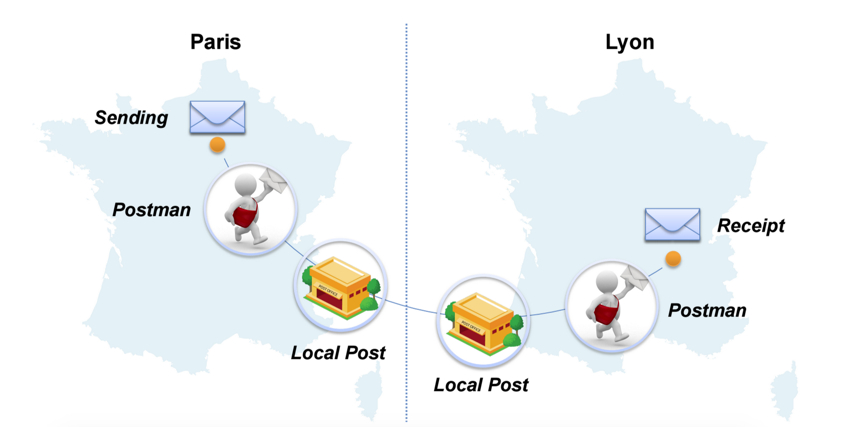

SMTP. Es la sigla en inglés de “protocolo simple de transferencia de correo”. Pero, para muchos de nosotros, no es nada simple: es otro de esos términos técnicos que entendemos muy vagamente.
¿Qué es un servidor SMTP y para qué se usa? A continuación, te damos todas las claves para entender cómo funciona un servidor SMTP y cómo puedes sacar partido del servidor SMTP de un proveedor externo para manejar tus campañas de email.
¿Qué significa SMTP?
Empecemos con una definición de lo que en inglés se conoce como “Simple Mail Transfer Protocol”.
En términos humanos y comprensibles, el SMTP –Simple Mail Transfer Protocol, o protocolo simple de transferencia de correo– es un protocolo básico que permite que los emails viajen a través de internet.
Es decir, es un protocolo de mensajería empleado para mandar un email de un punto A (un servidor de origen o servidor saliente>) a un punto B (un servidor de destino o servidor entrante). ¡Así de simple! No importa dónde tengas tu dirección de correo electrónico (en Yahoo, Outlook o Gmail), este procedimiento es imprescindible en cualquier proceso de envío de emails masivo y siempre es complementado por un servidor SMTP.
¿Qué es un servidor SMTP?
Un servidor SMTP es un ordenador encargado de llevar a cabo el servicio SMTP, que haciendo las veces de “cartero electrónico”, permite el transporte del correo electrónico por Internet. La retransmisión SMTP funciona de forma muy sencilla a través de un proceso de autenticación: si el servidor SMTP confirma las identidades del remitente y del destinatario, el envío se realiza.
Es como una oficina de correos de la web: se encarga de recoger el email del remitente y de entregarlo en la oficina de correos local del destinatario, que es otro servidor SMTP. Para entenderlo un poquito mejor, imaginemos el recorrido que tu email normal tendría que hacer a velocidad caracol para llegar a su destino:
El servidor SMTP no es una invención del siglo XXI: nació en 1982, pero sigue siendo el estándar de internet más utilizado a día de hoy. Eso sí, la herramienta se ha modernizado: la autenticación de usuario no existía en la versión inicial. Hasta el año 1997, los servidores de correo reenviaban todos los emails sin analizar previamente la dirección del remitente o del destinatario. Por seguir con la metáfora de nuestro cartero, era algo así como un buzoneo indiscriminado y poco seguro.
¿Qué significa SMTP?
Ahora que hemos presentado el sistema global del SMTP y su finalidad, podemos entrar en detalles un poco más técnicos para entender mejor cómo funciona la retransmisión SMTP.
Servidores de correo y protocolos de retransmisión
Cuando se envía un email a través del protocolo de retransmisión SMTP, lo que se produce es la validación de una serie de comandos de texto (de la cadena de caracteres ASCII), que posteriormente son enviados a un servidor SMTP. Por lo general, se utilizan los puertos 25 o 587.
En este proceso no entra en juego el contenido del correo electrónico, sino que la atención del lenguaje SMTP define exclusivamente en la transmisión.
Cada vez que se envía un email mediante el protocolo SMTP, se abre una nueva sesión del servicio de retransmisión SMTP. A continuación, se llevan a cabo una serie de intercambios de información entre el cliente de email y el servidor SMTP de destino, como si de una conversación se tratara.
Los comandos SMTP más utilizados
La conversación se produce mediante comandos de texto muy simples. Los comandos SMTP comunes son los siguientes:
- HELO: Para abrir una sesión con el servidor.
- EHLO: Para abrir una sesión, en el caso de que el servidor soporte extensiones definidas en el RFC 1651.
- MAIL FROM: Para indicar quien envía el mensaje.
- RCPT TO: Para indicar el destinatario del mensaje.
- DATA: Para indicar el comienzo del mensaje, este finalizará cuando haya una línea únicamente con un punto.
- QUIT: Para cerrar la sesión.
- RSET: Aborta la transacción en curso y borra todos los registros.
- SEND: Inicia una transacción en la cual el mensaje se entrega a una terminal.
- VRFY: Solicita al servidor la verificación de todo un argumento.
- EXPN: Solicita al servidor la confirmación del argumento.
- HELP: Permite solicitar información sobre un comando.
A continuación tenemos el ejemplo de una conversación amable entre el cliente de email y el servidor SMTP.
- Este intercambio se inicia mediante el comando «EHLO», seguido del comando «MAIL FROM», que nos permitirá identificar al remitente.
- En siguiente lugar se envía con el comando «RCPT» que permite al servidor identificar al destinatario y después el comando «DATA», a través del cual se envía el contenido mismo del correo electrónico.
- Finalmente, se envía el comando «QUIT», que indica el final del intercambio y de la conversación entre el cliente de envío de correo electrónico y el servidor.
Cada vez que se produce este proceso, el servidor SMTP enviará por email las respuestas de dichos clientes, para indicar si los comandos son válidos o no.
REFERENCIA: https://es.mailjet.com/blog/news/servidor-smtp/